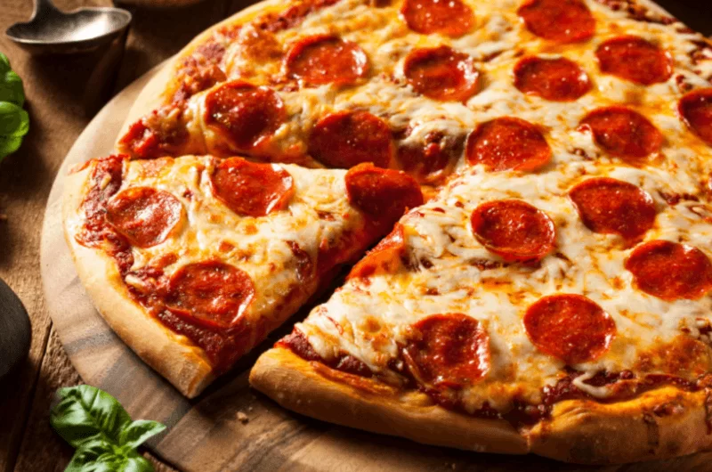

Pepperoni Pizza

Description
Pepperoni Pizza is a simple thing to make but probably one of the most popular foods in the world.
It's something everyone has had, and it has a massive variety of toppings, but for this recipe we will
focus on a simple pepperoni pizza.
Ingredients
Not many ingredients are required, but the dough can be a chore, I recommend ready-made dough from the shop.
- Pizza dough
- Mozarella cheese
- Tomato pureé
- Pepperoni slices
- Salt & pepper
- Basil if you like
Steps
- Roll your dough into a pizza base and stab with fork several times.
- Spread tomato puree over the base. Add chopped tomatoes on top then add onion and garlic.
- Sprinkle over cheese and arrange Pepperoni. Season with salt and pepper and optionally sprinkle on some basil.
- Place pizza on oiled baking sheets.
- Add toppings.
- Cook at 200°C for 20mins.
That's really it, it's a pretty simple recipe but it makes for a beautiful meal and will save you money
not ordering another pizza.